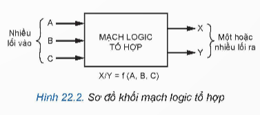

1. Khái niệm mạch logic tổ hợp
Mạch logic tổ hợp là mạch điện tử số mà đầu ra chỉ phụ thuộc vào trạng thái hiện tại của đầu vào, không phụ thuộc vào trạng thái trước đó.
Đặc điểm
- Không có phần tử nhớ
- Đầu ra thay đổi ngay khi đầu vào thay đổi
- Cấu tạo từ các cổng logic cơ bản

2. Mạch tổ hợp
Mạch tổ hợp có thể thực hiện các phép toán logic như AND, OR, NOT, XOR… và được ứng dụng trong nhiều thiết bị điện tử số.

3. Mạch so sánh
Mạch so sánh dùng để so sánh hai giá trị nhị phân và đưa ra kết quả lớn hơn, nhỏ hơn hoặc bằng nhau.